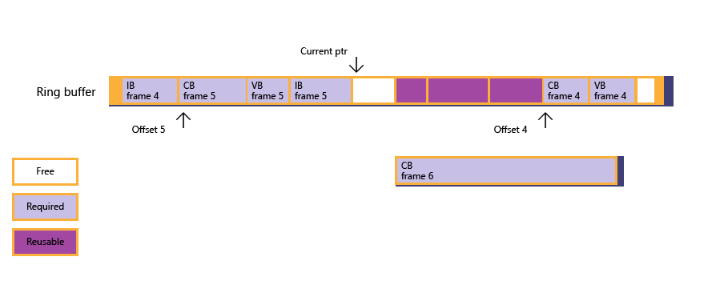

Shows how to manage resource data life-span by tracking GPU progress via fences. Memory can be effectively re-used with fences carefully managing the availability of free space in memory, such as in a ring buffer implementation for an Upload heap.
The following is an example in which an app experiences a rare demand for upload heap memory.
A ring buffer is one way to manage an upload heap. The ring buffer holds data required for the next few frames. The app maintains a current data input pointer, and a frame offset queue to record each frame and starting offset of resource data for that frame.
An app creates a ring-buffer based upon a buffer to upload data to the GPU for each frame. Currently frame 2 has been rendered, the ring buffer wraps around the data for frame 4, all the data required for frame 5 is present, and a large constant buffer required for frame 6 needs to be sub-allocated.
Figure 1 : the app tries to sub-allocate for the constant buffer, but finds insufficient free memory.
Figure 2 : through fence polling, the app discovers that frame 3 has been rendered, the frame offset queue is then updated, and the current state of the ring buffer follows - however, free memory is still not large enough to accommodate the constant buffer.

Figure 3 : given the situation, the CPU blocks itself (via fence waiting) until frame 4 has been rendered, which frees up the memory sub-allocated for frame 4.

Figure 4 : now free memory is large enough for the constant buffer, and sub-allocation succeeds; the app copies the big constant buffer data to memory previously used by resource data for both frames 3 and 4. The current input pointer is finally updated.

If an app implements a ring buffer, the ring buffer must be large enough to cope with the worse-case scenario of the sizes of resource data.
The following sample code shows how a ring buffer can be managed, paying attention to the sub-allocation routine that handles fence polling and waiting. For simplicity, the sample uses NOT_SUFFICIENT_MEMORY to hide the details of “not sufficient free memory found in the heap†since that logic (based on m_pDataCur and offsets inside FrameOffsetQueue) is not tightly related to heaps or fences. The sample is simplified to sacrifice frame rate instead of memory utilization.
Note that, ring-buffer support is expected to be a popular scenario; however, the heap design does not preclude other usage, such as command list parameterization and re-use.
struct FrameResourceOffset
{
UINT frameIndex;
UINT8* pResourceOffset;
};
std::queue<FrameResourceOffset> frameOffsetQueue;
void DrawFrame()
{
float vertices[] = ...;
UINT verticesOffset = 0;
ThrowIfFailed(
SetDataToUploadHeap(
vertices, sizeof(float), sizeof(vertices) / sizeof(float),
4, // Max alignment requirement for vertex data is 4 bytes.
verticesOffset
));
float constants[] = ...;
UINT constantsOffset = 0;
ThrowIfFailed(
SetDataToUploadHeap(
constants, sizeof(float), sizeof(constants) / sizeof(float),
D3D12_CONSTANT_BUFFER_DATA_PLACEMENT_ALIGNMENT,
constantsOffset
));
// Create vertex buffer views for the new binding model.
// Create constant buffer views for the new binding model.
// ...
commandQueue->Execute(commandList);
commandQueue->AdvanceFence();
}
HRESULT SuballocateFromHeap(SIZE_T uSize, UINT uAlign)
{
if (NOT_SUFFICIENT_MEMORY(uSize, uAlign))
{
// Free up resources for frames processed by GPU; see Figure 2.
UINT lastCompletedFrame = commandQueue->GetLastCompletedFence();
FreeUpMemoryUntilFrame( lastCompletedFrame );
while ( NOT_SUFFICIENT_MEMORY(uSize, uAlign)
&& !frameOffsetQueue.empty() )
{
// Block until a new frame is processed by GPU, then free up more memory; see Figure 3.
UINT nextGPUFrame = frameOffsetQueue.front().frameIndex;
commandQueue->SetEventOnFenceCompletion(nextGPUFrame, hEvent);
WaitForSingleObject(hEvent, INFINITE);
FreeUpMemoryUntilFrame( nextGPUFrame );
}
}
if (NOT_SUFFICIENT_MEMORY(uSize, uAlign))
{
// Apps need to create a new Heap that is large enough for this resource.
return E_HEAPNOTLARGEENOUGH;
}
else
{
// Update current data pointer for the new resource.
m_pDataCur = reinterpret_cast<UINT8*>(
Align(reinterpret_cast<SIZE_T>(m_pHDataCur), uAlign)
);
// Update frame offset queue if this is the first resource for a new frame; see Figure 4.
UINT currentFrame = commandQueue->GetCurrentFence();
if ( frameOffsetQueue.empty()
|| frameOffsetQueue.back().frameIndex < currentFrame )
{
FrameResourceOffset offset = {currentFrame, m_pDataCur};
frameOffsetQueue.push(offset);
}
return S_OK;
}
}
void FreeUpMemoryUntilFrame(UINT lastCompletedFrame)
{
while ( !frameOffsetQueue.empty()
&& frameOffsetQueue.first().frameIndex <= lastCompletedFrame )
{
frameOffsetQueue.pop();
}
}
Â
Â